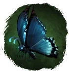
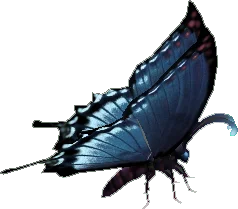

Открыть в интерактивной вики →

| Уровень | 50 |
|---|---|
| Прокачка | есть |
| Ранг в стае | 5 |
| Здоровье | 1300 |
| Мана | 1200 |
| Выносливость | 800 |
Цена

Где взять
Покупается в Клетке гильдий 1
Выкуп
Выкуп за смерть:
5х Платина либо откат 4 часа
Платина либо откат 4 часа
5х
Платина либо откат 4 часаНавыки


Скины
Статистика
Уровень: 50 Ранг: 5
Здоровье: 1300
Мана: 1200
Выносливость: 800
Доп. информация
Требуемый уровень: 50
Покупка: I гильдейская клетка
Цена: 1 800 000 золота и 400 платины
Может получать опыт — ДА
Описание
 | Эфирное воплощение светлых сторон Природы. Хрупкий облик Мотылька скрывает огромную разрушительную силу. Наносит сильные удары, призывает рой ос и использует сильные яды — это для врагов. К хозяину же заботлив и умеет его лечить. Атакует физически, издалека и ментально. | |